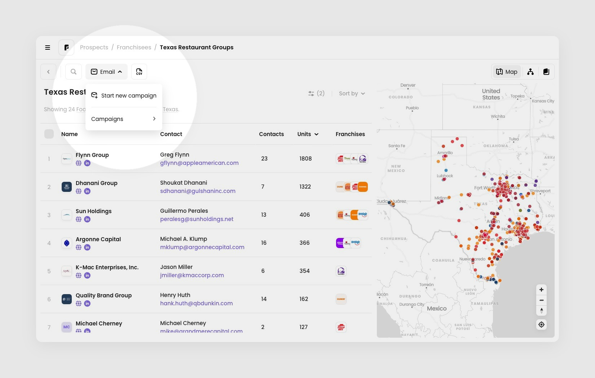
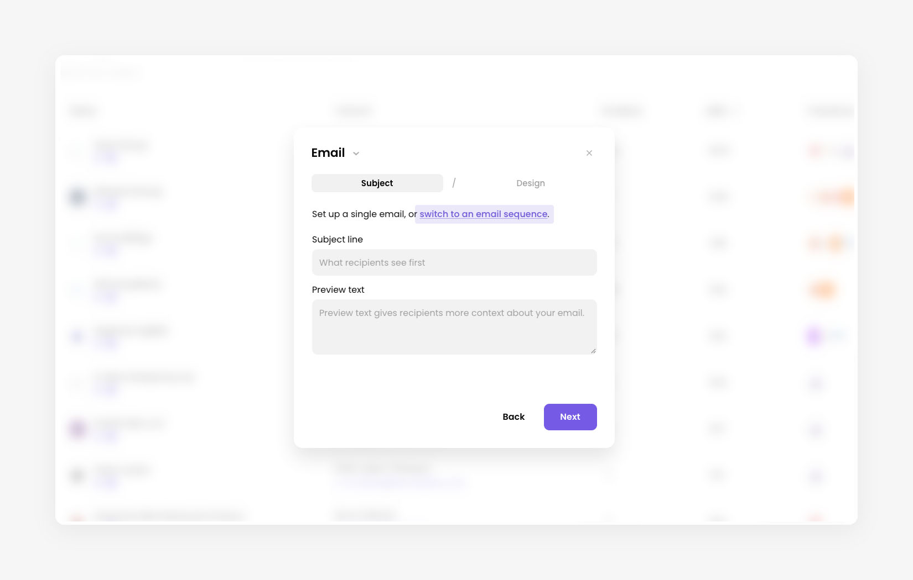
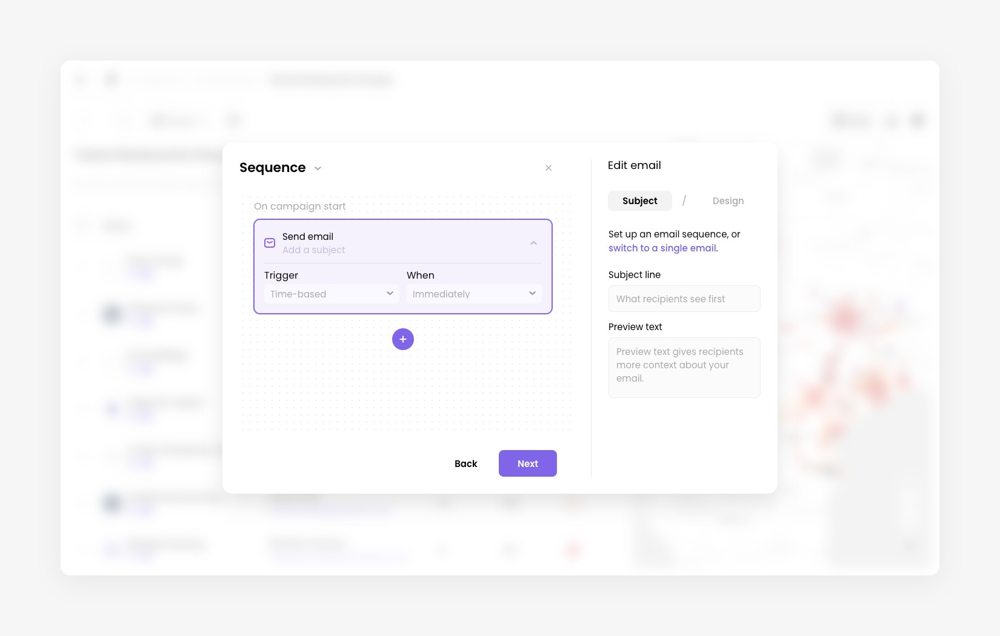
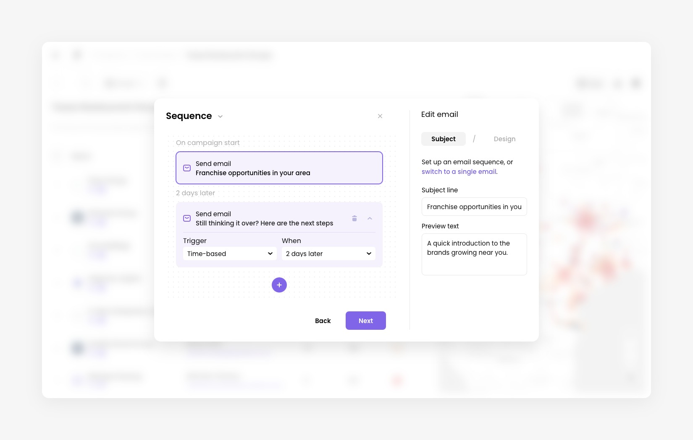
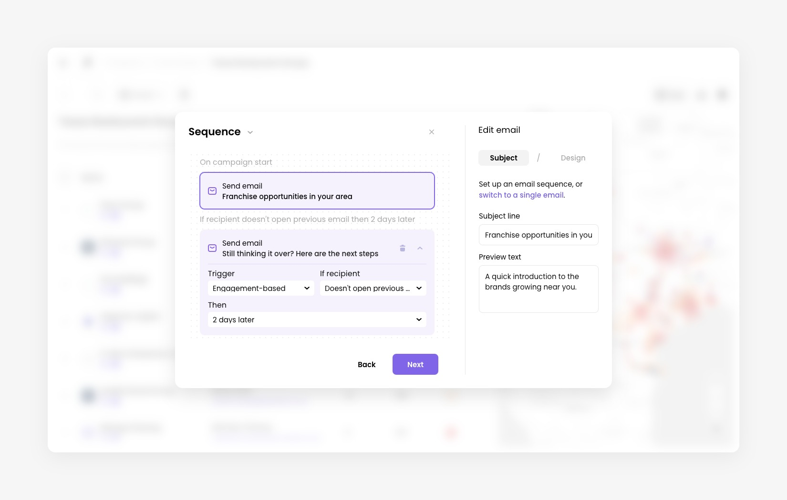
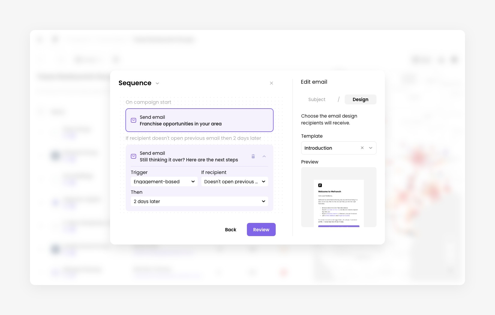
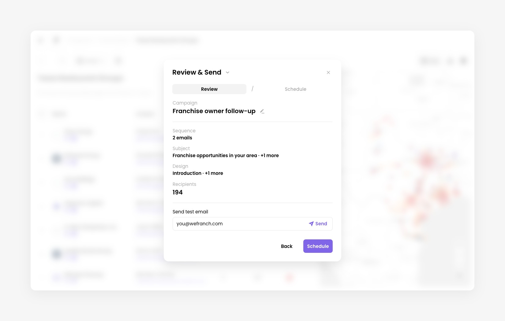
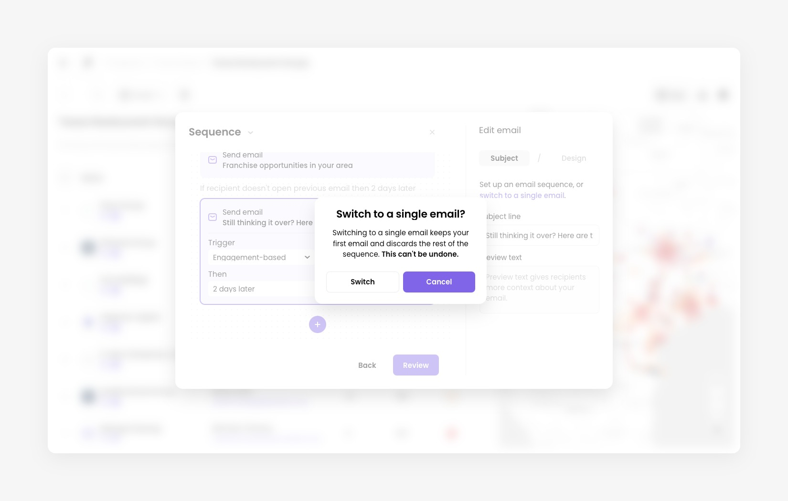

How to create an email sequence
How it works
An email sequence is a campaign made of several emails instead of one. Everyone in your audience gets the first email when the campaign starts. Each email after that is sent based on a trigger: either a set amount of time after the previous email, or how the recipient reacted to it.
A sequence is set up in the same wizard as a single email campaign. You choose the campaign name, sender, and recipients once. Then you build the emails on the Sequence stage.
Open the wizard
Click the Email button in the toolbar on Prospects or Leads, then choose Start new campaign.

Set up the campaign
Work through the Campaign, Sender, and Recipients steps as you would for any campaign. If you need help with these, see How to create and send email campaigns.
Switch to an email sequence
Every campaign starts as a single email. On the Subject step, click switch to an email sequence in the line under the title.
If you already typed a subject line or chose a design, it becomes the first email of the sequence.

Build the sequence
The title changes from Email to Sequence, and the wizard splits into two panels:
- On the left, the sequence. Each email is a card, joined by a line that shows when it is sent.
- On the right, Edit email. It has the same Subject and Design tabs as a single email, and edits whichever card is selected.
The sequence starts with one email. Its trigger is fixed: it goes out On campaign start. Click the email to select it, then enter its subject line and preview text on the right.

Add more emails
Click the + button under the last email to add another. The new email is selected, so you can write its subject straight away.
New emails are sent 2 days later by default. In the card, use Trigger and When to change it. The line above each card shows the result, for example 2 days later.
- Click an email to select it. Click the arrow on its card to collapse or expand its settings.
- Click Add a subject on an email without one to jump to its subject field.
- Click the bin icon on an email to delete it. The first email can't be deleted.
- If you click the selected email again, the right panel is cleared. Select another email, or click add another, to continue.

Choose when each email is sent
Every email after the first has a Trigger:
- Time-based sends the email a fixed time after the previous one. Under When, choose Immediately, 1 day later, 2 days later, 3 days later, 1 week later, or 2 weeks later.
- Engagement-based sends the email depending on what the recipient did with the previous one. Under If recipient, choose Opens previous email, Doesn't open previous email, Clicks a link in previous email, or Doesn't click a link in previous email.
For the two Doesn't options, a Then field appears. It sets how long to wait before sending, from Immediately to 2 weeks later. The line above the card then reads, for example, If recipient doesn't open previous email then 2 days later.

Design each email
Select an email, open the Design tab on the right, and start from scratch or pick a saved template. A preview shows what recipients will get. Each email in the sequence has its own design, so repeat this for every email.
When every email has a subject and a design, click Review. If something required is missing, the wizard selects that email and highlights the field.

Review and schedule
On the Review & Send step, the summary adds a Sequence row with the number of emails. Subject and design show the first email followed by +N more.

Click Schedule, then choose Send now or Schedule for later and pick a date and time. Your choice sets when the campaign starts, and so when the first email is sent. Later emails follow their own triggers. As with any campaign, emails are sent in batches.
Switch back to a single email
To go back, click switch to a single email in the Edit email panel.
If your sequence has more than one email, the wizard asks you to confirm. Switching keeps your first email and discards the rest of the sequence. This can't be undone.
